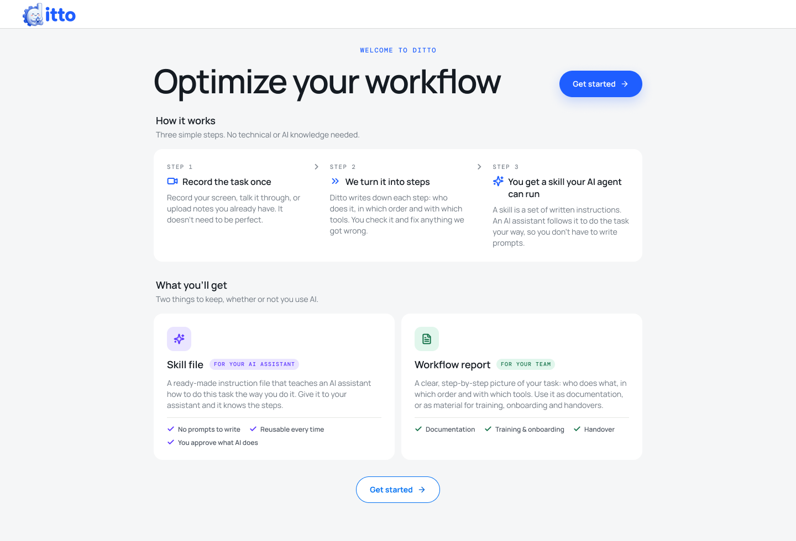
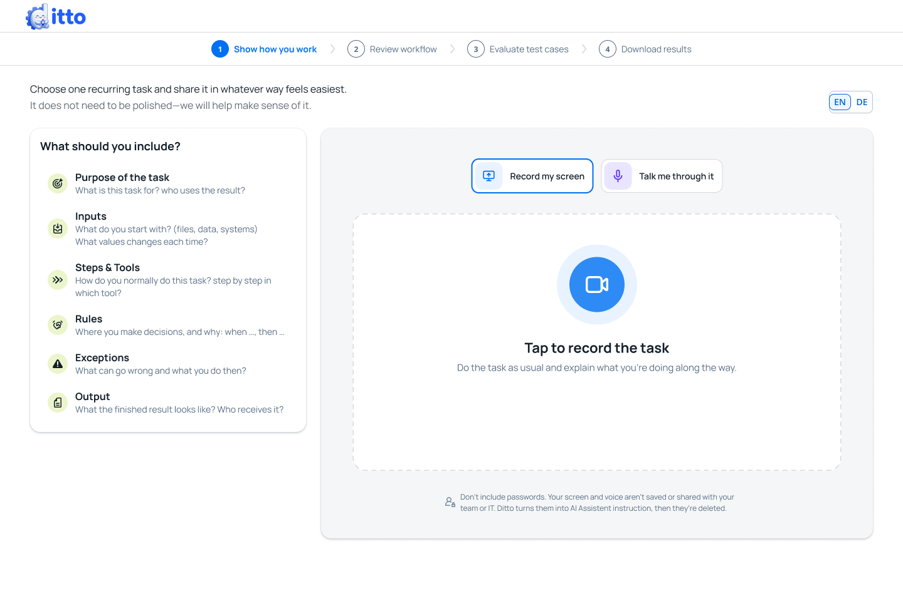
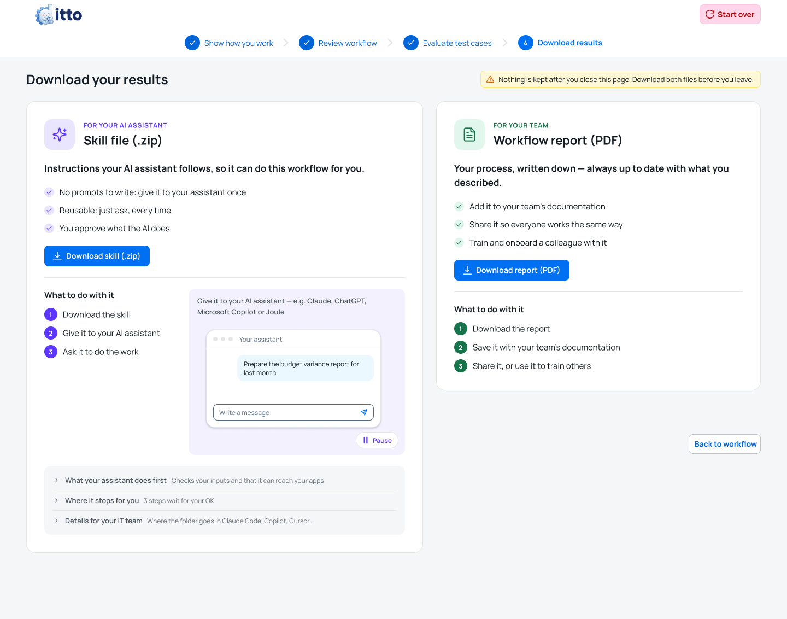
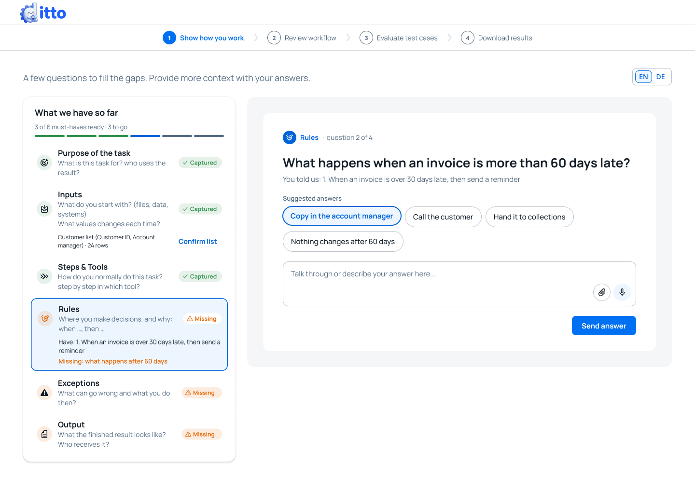
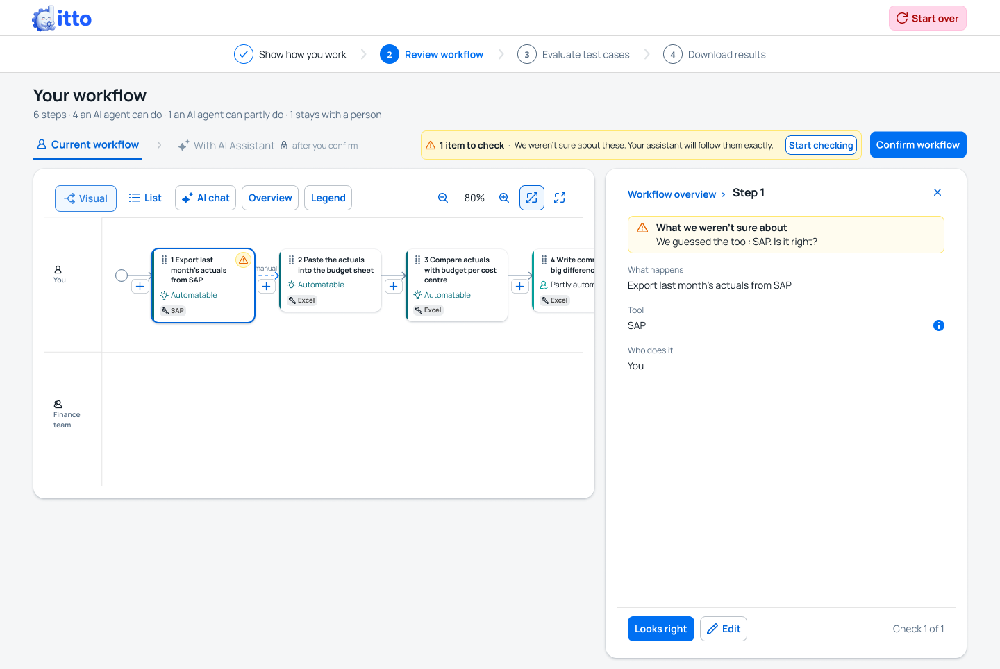
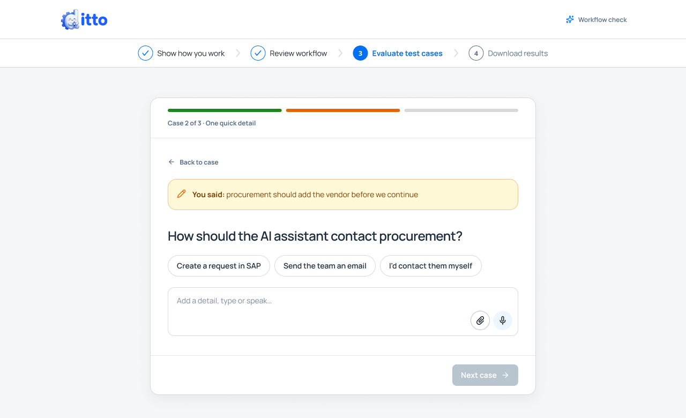
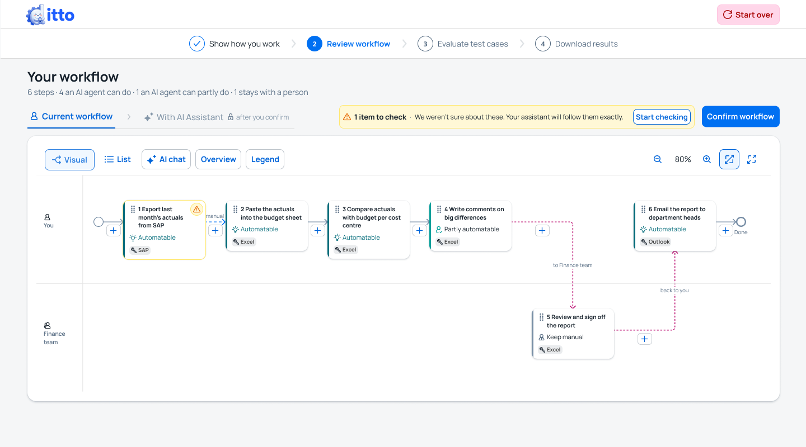

Teach AI your job, without knowing AI
Interaction design for Ditto: show it a repetitive task once, and get a report your colleagues can follow plus a tested skill your AI assistant can run.

The problem
Testers got lost at the start and at the hand-off. Most had never heard of an AI "skill", and some feared AI would replace them.
What I did
Reframed Ditto for AI novices, redesigned the capture-to-skill flow in two iterations and built the public landing page.
Outcome
Two design iterations and showditto.de shipped by me in the production code: 38 commits in about 2.5 weeks.
Context
SAP asked: can we create a new way into its AI skill library, one that captures what a user actually does?
Finance, HR and controlling experts repeat the same tasks every month: reconciliations, accruals, reports. The knowledge lives in their heads.
Ditto lets them show a task once, by recording their screen or just describing it. AI extracts the steps, asks about rules and exceptions, and produces two things: a report a colleague can follow, and a skill an AI assistant can run.
I joined the team in week 8 of 12, after a team change, with one month to go before the final show.

What I found when I joined
Lost at the start
Testers opened the tool without knowing what it would do for them or what to expect.
"What's a skill file?"
End users had never heard of skills, and got lost at the download, the most important step.
Fear, not friction
The target users can be sceptical of AI and protective of their own workflow. Some worry about their job.
Reframe: from performer to supervisor
Two days in, I proposed a new value proposition for AI novices: Ditto is here to help you, not replace you.
- The user's role moves from performer of repetitive work to supervisor of it: AI prepares, the person approves.
- An onboarding first page that says what Ditto does and what to expect.
- Show the gain: contrast the long manual workflow with what AI can take over.
- Keep the technical part in the background. The report comes first, the skill file is for the assistant.
SAP's team called encouraging people who are afraid of these tools "a very good opportunity".

You don't need to know how to automate. You just need to know your job.— showditto.de
Redesigning the flow, twice
Iterations 4 and 5 went through every step of the flow.
- Welcome: a first screen with the value proposition and one clear call to action.
- Capture: record, describe, upload a transcript or reuse old docs. "Rough is fine". A floating recording bar with Delete and Finish, and a privacy note before recording.
- Clarify: follow-up questions with answer chips instead of copy-paste, an honest "Captured" status and one question count.
- Review: a full-width workflow canvas. Anything AI wasn't sure about is tagged "To check" in yellow, and handovers between people stand out.
- Test & hand off: example test cases, approval asked once instead of per step, the skill file and report side by side.




Designing in the code
With weeks, not months, left, I skipped the hand-off and shipped my designs directly in the React + SAP UI5 codebase.
I designed and built showditto.de, the public landing page, and moved the product to /app behind it. Then I implemented both design iterations in the product myself, working with AI coding tools.
Design feedback from a test in the morning could be live in the afternoon. The engineers stayed focused on skill quality.
What I learned
- For AI novices, design for trust first. Being honest about what AI isn't sure of makes people more confident, not less.
- Lead with the outcome people understand (a report a colleague can follow) before the one they don't (a skill file).
- Joining late is fine if you onboard through the research: I read the team's interview notes before touching a screen.